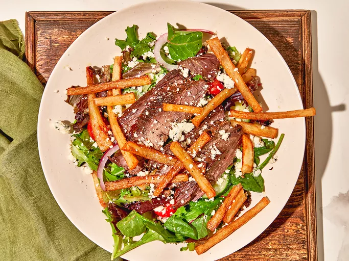

Steak and Fry Salad
Home

This steak and fry salad is a country club salad brought home.
A citrus marinade tenderizes tough flank steak for a classic steak, fries, and blue cheese salad.
Ingredients
- 2 pounds beef flank steak
- 2 bay leaves, or more to taste
- 1 orange, zested
- 1 lime, zested
- 1 lemon zested and juiced
- 1 teaspoon freshly ground black pepper
- 1 teaspoon kosher salt
- 7 sprigs thyme
- 1 clove garlic, smashed
- 3 tablespoons olive oil
- 1 (9 ounce) package frozen French fries
- 4 cups mixed greens, or more as needed
- 2 tablespoons olive oil
- 2 tablespoons lemon juice
- 1/2 red onion, halved and thinly sliced
- 1 cup cherry tomatoes
- 1 (8 ounce) package crumbled blue cheese
Steps
- Place steak in a resealable plastic bag with bay leaves, orange zest, lime zest, lemon zest, lemon juice, salt, pepper, thyme, and garlic. Add olive oil, reseal the bag, massage to mix the marinade, and refrigerate for 2 hours or up to overnight.
- Preheat the oven to 425 degrees F (220 degrees C). Spread French fries on a baking sheet.
- Bake fries in the preheated oven until crisp, about 15 minutes, or according to package directions. Keep warm.
- Heat a cast iron skillet over medium-high heat. Sear steak in hot skillet, about 5 minutes per side. Deglaze the pan, if desired, by juicing the zested orange directly into the skillet. Remove steak from the pan and let rest, 2 to 3 minutes.
- Meanwhile toss mixed greens with olive oil and lemon juice, or salad dressing of your choice. Top salad with red onion, tomatoes, blue cheese, and French fries.
- Slice steak thinly across the grain, and place on salad. Garnish with more blue cheese and serve immediately.